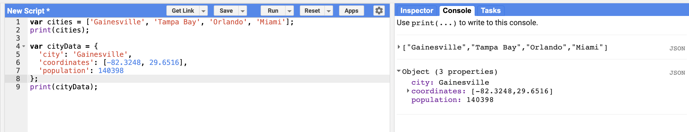

Objects store labeled data as key-value pairs. They make your code more readable than lists when you care about names instead of positions.
Learning objectives
- Create objects with curly braces and key-value pairs.
- Access values by key using
.get(). - Use camelCase naming to keep code clear.
- Understand when to choose objects over lists.
Why it matters
Objects let you bundle metadata (location, dates, band lists) together in a self-documenting way. Earth Engine also returns many results as objects, so reading them is essential.
Quick win: make and inspect an object
var cityData = {
name: 'Gainesville',
coordinates: [-82.3248, 29.6516],
population: 140398
};
print('City data', cityData);What you should see
A console entry labeled "Dictionary" with keys name, coordinates, and population.

Accessing values
Use .get() with the key name:
var cityName = cityData.get('name');
var coords = cityData.get('coordinates');
print('City name:', cityName);
print('Coordinates:', coords);Key concepts
- Syntax:
{ key: value, anotherKey: value } - Keys are strings: You can quote them or not; be consistent.
- Comma separated: Each key-value pair ends with a comma except the last.
- Nested values: Values can be strings, numbers, lists, or other objects.
Try it: build your own
Create an object for a study site with keys name, lat, lon, and sensor. Print it.
Add a bands key that stores a list of band names.
Make another object and compare keys to see how objects stay readable.
Common mistakes
- Leaving out commas between pairs.
- Forgetting quotes around string values.
- Mixing client objects with Earth Engine objects: use
ee.Dictionarywhen you need an object on the server.
Quick self-check
- What is the key for retrieving the population in the example above-
- When would you prefer an object over a list-
- How do you access a value stored under a key-
Next steps
- Lists for ordered data.
- Functions to process lists of objects with
.map(). - Client vs Server to learn when to wrap with
ee.Dictionary.